Sebastian Boerakker, Maximilian Konter, Michael Schwab
Ueberblick
- Standort: München, Kaufingerstraße 15
- Mitarbeiter: 4
- Gründung: 2016
- Spezialisierung:
- Industrie 4.0
- IoT
- Industrieautomatisierung
- Predictive Maintance
Was ist Industrie 4.0
- Bezeichnet die vierte Industrielle Revolution
- Wurde durch die Forschungsunion und die Hightechstrategie der Bundesregierung initiiert
- Prinzipien:
- Vernetzung
- Informationstransparenz
- Technische Assistenz
- Dezentrale Entscheidungen
Industrie 4.0
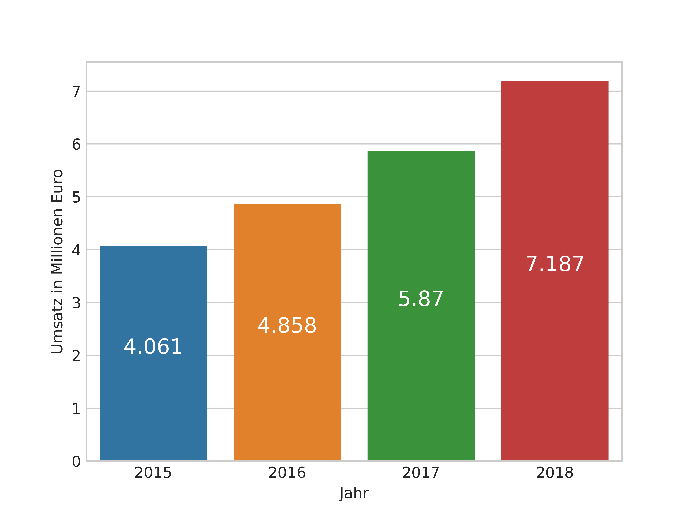Umsatz Prognose im Bereich Industrie 4.0 für 2018
Industrie 4.0
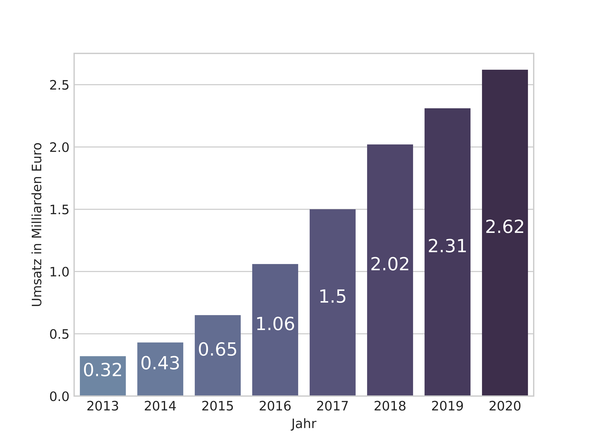Investitions Prognose im Bereich Industrie 4.0 bis 2020
SensorLink
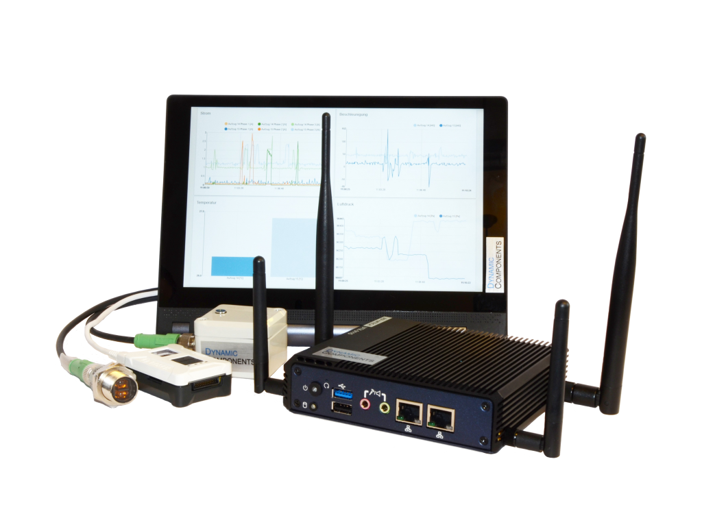
From Sensors via Edge Comupting to the Cloud
- Geringer Nachrüstaufwand
- Herstellerunabhängig
- Industrielle Sensorik
- Analyse und Visualisierung der Daten in der Cloud oder auf dem eigenen Server
Nachrüsten von Maschinen fuer die Industrie 4.0 und IIot
Vorteile:
Sensorik
- Beschleunigunssensoren
- Piezosensoren und Dehnungsmesstreifen
- Sensoren zur Messung von Umweltparametern
- Hochauflösende Strom/Leistungsmessung
- Optische Sensoren
- Akkustische Sensoren
Datenverarbeitung und Visualisierung
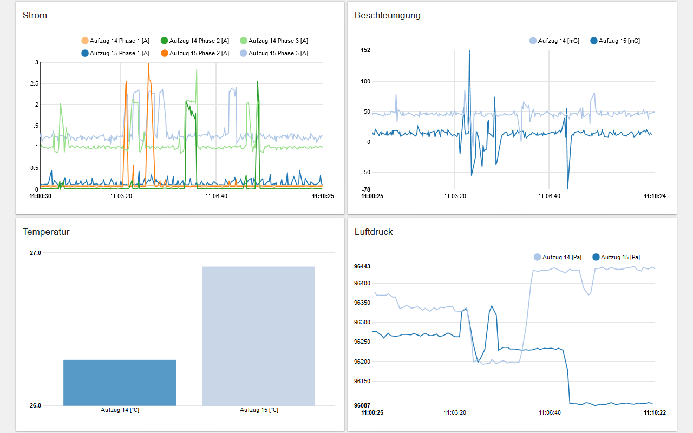
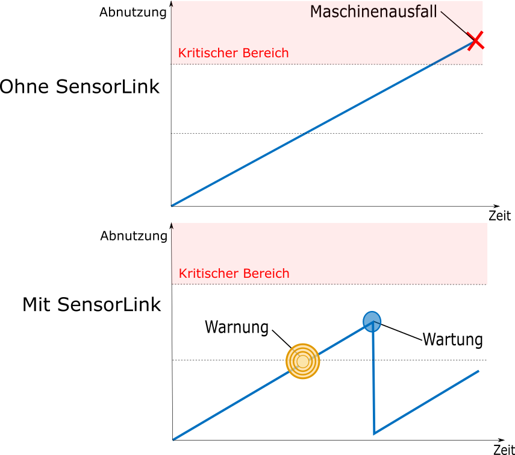

- Lokale Datenverarbeitung (Edge Computing)
- Reduzierte Datenmengen
- Datensicherheit
- Analysen im laufendem Betrieb
- Uebertragung der Daten in die Cloud
- Prozesstransparenz
- Vorauschaunde Wartung
- Zustandsüberwachung
Beispiel
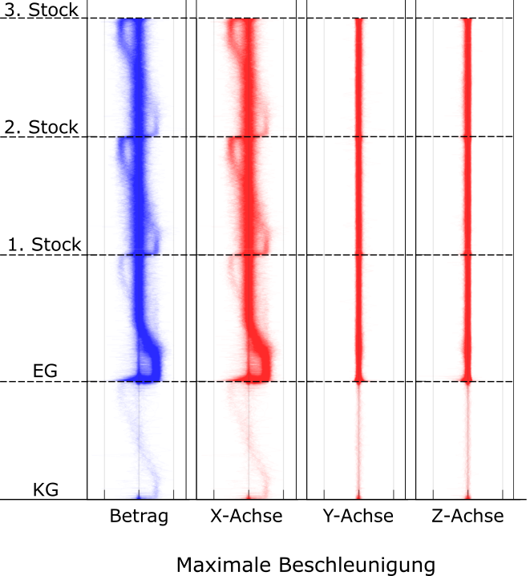
intakter Aufzug
intakter Aufzug
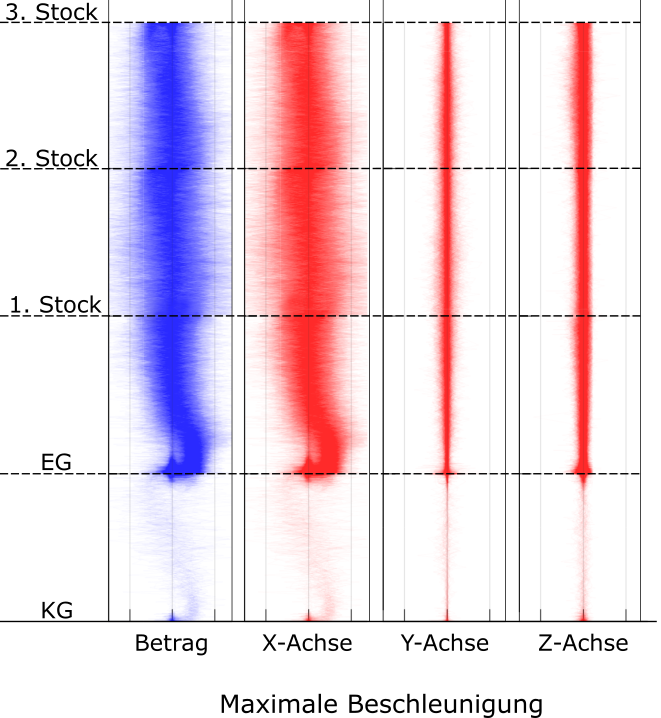
defekter Aufzug
defekter Aufzug
Beispiel 2
Fahrtenprofil
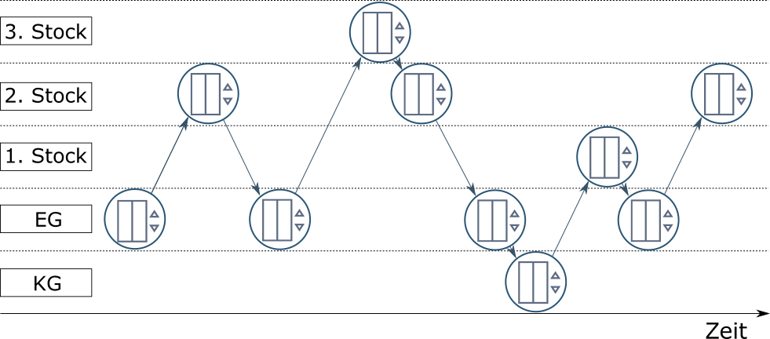
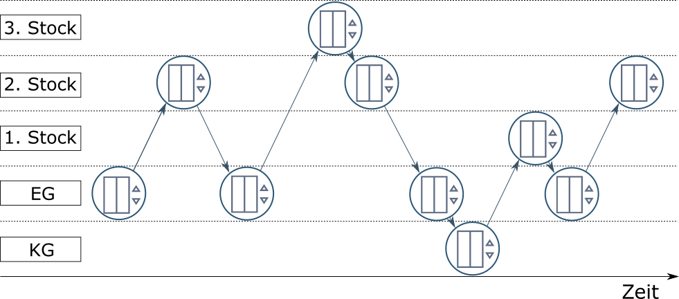
Fahrtenmatrix
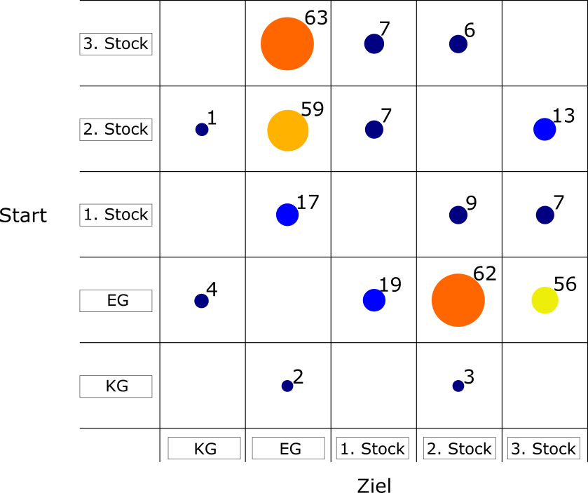
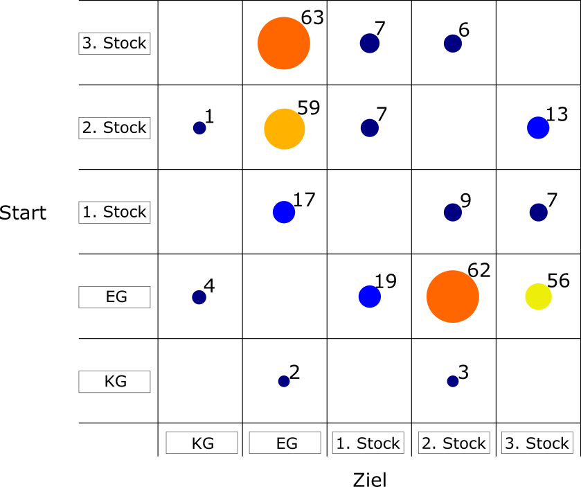
Sonstiges
- 2016
- Erster Auftritt auf der CeBIT
- Teilnahme am Deutsche Bahn Accelerator Programm - 25000€ Preisgeld
- Aufnahme in das challengeUp! IoT Accelerator Programm
- 2017
- Aufnahme in das XPRENEURS Programm der UnternehmerTUM
- Auftritt vor dem Deutschen Bundestag - Deutschland und die Digitalisierung
- Aufnahme in das Techboost Programm der Deutschen Telekom